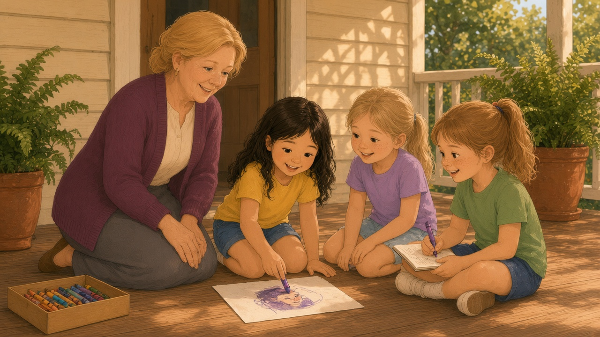
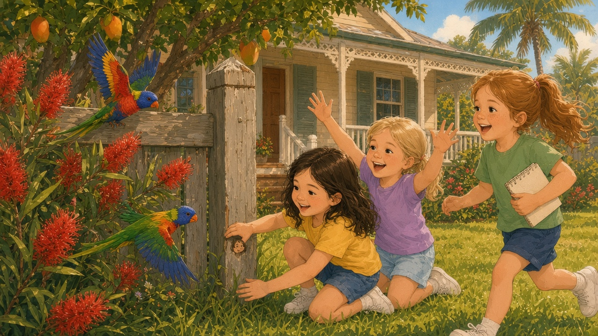
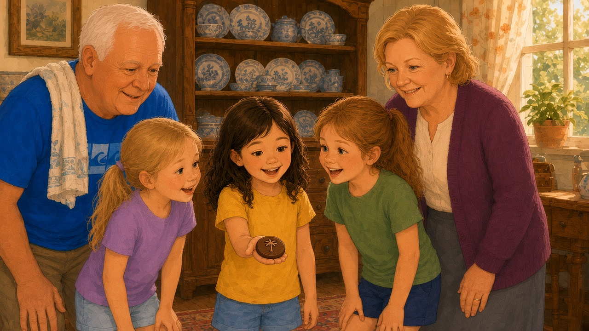

Shayla woke before anyone else. The window above her bed was a pale square of pink, and a kookaburra on the clothesline was laughing as if it had heard the best joke in the world.
For one sleepy moment she could not remember why her tummy felt fizzy. Then she did.
The face in the floorboards.
She slid out of bed, tiptoed across the cool boards, and gave Olivia's shoulder a tiny shake. Olivia opened one eye. Then Shayla shook Isabella, who sat straight up with her hair sticking out on one side and said, “Is it morning? Is it treasure time?“
“Shhh,“ whispered Shayla, giggling. “It's morning. Bring your eyes.“
They wriggled into their clothes in a hurry — Shayla in her yellow top and denim shorts, Isabella in lavender, Olivia in green — and crept down the hall. The house was quiet except for its own small noises — the tick of the kitchen clock, the sigh of the old fridge, a gecko chirping somewhere behind a picture frame. The front door was already open. Poppy believed in fresh air the way some people believe in breakfast.

Out on the verandah, the morning light came low and sideways through the lattice. It laid long stripes across the boards, brighter and sharper than the soft gold of yesterday afternoon.
Shayla went straight to the corner. She knelt down. She held her breath.
There it was.
In the morning light the little shape stood out clearly — two round eyes, a short straight nose, and a mouth curved in a small, patient smile. Around it ran a ring, like the edge of a coin. It was no bigger than Shayla's thumbnail, and it had been worn smooth by a hundred years of bare feet, but it was most certainly a face.
“Oh,“ breathed Isabella. “It's smiling at us.“
Olivia knelt beside them and tilted her head. “Someone carved it on purpose. Look how even the circle is.“
“A Cowden face,“ said Shayla. The words felt important in her mouth, like the first line of a song.
“Well, well,“ said a voice behind them. “Up with the birds, are we?“
Poppy stood in the doorway holding a mug of tea, his white hair rumpled from sleep. Nana peered over his shoulder in her purple dressing gown. When she saw the three girls kneeling around the corner of the verandah, her eyes went very bright.

“You found it again,“ she said.
“It's real, Nana,“ said Shayla. “Come and see.“
Nana did come and see. So did Poppy, though his knees made a noise like a creaky gate as he bent down. For a long moment nobody said anything at all.
“All the years I've walked on these boards,“ said Poppy at last, softly. “And I never once looked down at the right time of day.“
“That's the trick, isn't it?“ said Nana. “Shadow and sunlight sharing the floor. The clue told us when to look, as well as where.“
Olivia sat back on her heels. “Then we should make a copy. Before the light moves.“
“A copy?“ asked Isabella.
“A rubbing,“ said Nana, already heading inside. “Wait right there.“
She came back with a pad of thin paper and a box of fat wax crayons. She showed them how to lay the paper over the mark and rub the side of a crayon across it, gently, gently, the way you might stroke a sleeping cat. Shayla went first, with a purple crayon. Slowly, out of the blank paper, the little face appeared — the ring, the eyes, the small calm smile.
“It's like magic,“ whispered Shayla.
“It's like history,“ said Poppy. “Which is a sort of magic, if you ask me.“
Olivia drew a careful sketch in her notebook too, with an arrow showing which board, and wrote underneath in her best printing: VERANDAH. CORNER. MORNING LIGHT.
“Now we know what we're looking for,“ she said. “If there's one, there might be more.“
But first there was breakfast, because Nana said no treasure hunt in history had ever been won on an empty tummy. There were scrambled eggs and toast soldiers and slices of cold, sweet mango. Poppy sat at the head of the table and, while the girls ate, he told them more about Thomas Cowden.

“He came up to Queensland as a young man,“ Poppy said, “with not much more than a toolbox and a good pair of boots. He worked on boats for a while, and on farms, and then he bought this little piece of land when it was mostly scrub and sand and mosquitoes.“
“Lots of mosquitoes?“ asked Isabella.
“Clouds of them,“ said Poppy gravely. “He built the first two rooms of this house with his own hands. Then he added more rooms as the family grew. The verandah came later. My grandmother wanted somewhere to sit in the cool of the evening, so he built her one that went all the way round.“
“Like a hug,“ said Shayla.
Poppy smiled at her. “Exactly like a hug. He loved this place. He used to say a house is only timber until people love it — then it's a home, and a home remembers.“
Shayla thought about the creak in the hallway the night before and decided not to say anything. But she shivered, a nice shiver.
After breakfast, the hunt began properly.
Olivia had a plan. Of course she did. “We each take a different part,“ she said. “Isabella, you look outside. Shayla, you look inside. I'll look at the edges — doorframes and steps and posts. And everyone holds the rubbing in their head.“
“I've got it in my head already,“ said Isabella, tapping her forehead. “Ring. Eyes. Smile.“
They searched all morning. Isabella checked the clothesline poles, the letterbox and the bricks around the garden beds. Shayla looked under tables and behind cushions and along the bottoms of the bookshelves, until she found three lost pegs and a five-cent coin. Olivia went slowly round every doorframe with her nose nearly touching the wood.
By morning tea, they had found nothing at all, and Isabella flopped onto the lawn with her arms flung out like a starfish.
“Maybe there's only one,“ she groaned.
Shayla lay down beside her and stared up at the sky. Then she turned her head and looked at the front gate — the old wooden gate with its tall square posts, grey and silky with age.
She sat up.
“The gatepost,“ she said. “Isabella, did you look low down? Really low? Where the grass grows?“
Isabella had not. They ran to the gate together and knelt in the grass. Shayla pushed aside a tuft of buffalo grass at the bottom of the left-hand post, and there, half hidden, was a small round shape cut into the timber.
Ring. Eyes. Smile.
“Number two!“ shrieked Isabella, so loudly that a pair of lorikeets burst out of the bottlebrush in a flurry of green and red.
Olivia came running with her notebook, and Nana came hurrying with the crayons, and the second rubbing went right next to the first. They were exactly the same.
“Thomas put them low,“ said Olivia slowly, “where only someone small would notice.“
“Someone like us,“ said Shayla.
It was Olivia who found the third face. After lunch, while Nana and Poppy washed up, she went back to doorframes and dressers. In the dining room stood the big old dresser where Nana kept her best plates. Olivia ran her fingers along its edge, all the way to the bottom corner, where the wood curled round in a carved scroll.
Her fingers stopped.
“Come here,“ she called, in a very calm voice that was not calm at all.
There, tucked inside the curl of the scroll, smaller than the others, was a third Cowden face.
But this one was different. When Shayla touched it, it moved — just a little, the way a loose tooth moves. Poppy came to look, drying his hands on his tea towel, and his eyebrows climbed right up his forehead.
“Gently does it,“ he said. “Use your fingernail, love.“
Shayla pressed the edge of the little round face and wriggled it. With a tiny click, a disc of wood popped out into her palm. It was smooth and dark, about the size of a twenty-cent coin. On the front was the Cowden face. And when she turned it over, the back had a different picture etched into it: a palm tree, leaning slightly, with three fronds on one side and two on the other.
Everyone stared at it.
“A palm tree,“ said Isabella. “There are palm trees at the bottom of the garden!“
“There are palm trees all over Hervey Bay,“ said Olivia, but her eyes were shining just as brightly.
Nana held out her hand, and Shayla laid the disc in it very carefully. Nana turned it to the window, so the afternoon light slid across the etching.

“Our first real clue,“ Nana said quietly. “Thomas left it for whoever looked closely enough.“
Poppy put one arm around Shayla's shoulders. “My grandfather,“ he said, and his voice wobbled just a little, “would have liked you three very much.“
That night, the wooden disc sat in the middle of the kitchen table on a folded hanky, like a crown jewel. The three rubbings were stuck to the fridge with magnets. And Shayla, tucked into bed with the window open to the warm, salty dark, could hear the palm trees at the bottom of the garden rustling and whispering together, as if they had been waiting a very long time to be asked a question.